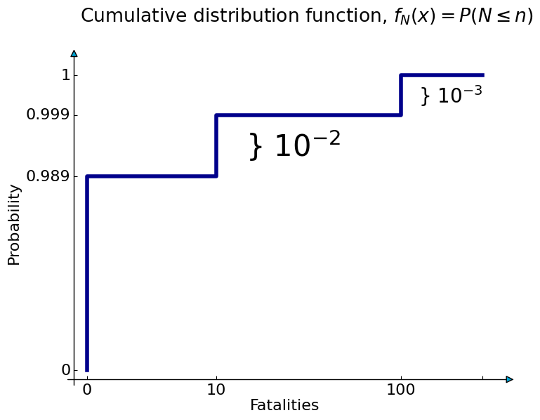
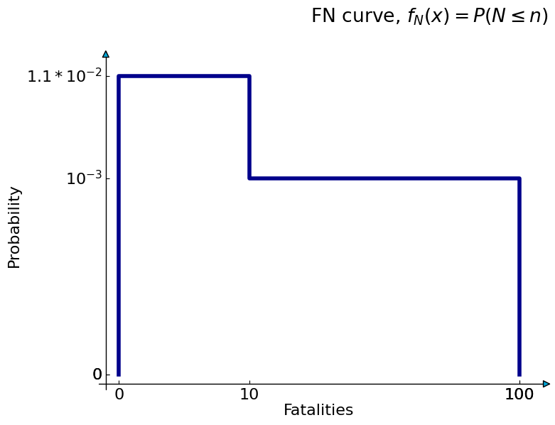

Calculation of an FN curve
Calculation of an FN curve#
Example 3.6
The following example shows the composition of an FN curve for a system with two mutually exclusive event scenarios.
Accident 1 with \(N_{1}=10\) fatalities and a probability of \(P_{1} = 10^{-2}\) per year Accident 2 with \(N_{2}=100\) fatalities and a probability of \(P_{1} = 10^{-3}\) per year
Based on this information the probability mass function can be formed (first graph). Consequently, the cumulative distribution function can be made (second graph). Finally, the probability of exceedance or the FN curve is made (third graph).
Finally, we note that the expected value of the number of fatalities equals:
\(E(N) = P_{1}N_{1} + P_{2}N_{2} = 0.2\) fatalities per year
# Probability density/mass function
fig = plt.figure(figsize=(8,6))
ax = fig.add_subplot(axes_class=AxesZero)
for direction in ["xzero", "yzero"]:
ax.axis[direction].set_axisline_style("-|>") # add arrows
ax.axis[direction].set_visible(True) # x and y from origin
for direction in ["left", "right", "bottom", "top"]:
ax.axis[direction].set_visible(False) # hide borders
N_fatalities = ['0', '10', '100']
N_fatalities_loc = [0.05, 0.30, 0.66]
pdf = ['0.989', '$10^{-2}$', '$10^{-3}$']
pdf_loc = [0.99, 0.66, 0.33]
set_TUDstyle()
ax.bar(N_fatalities_loc, pdf_loc, width=0.05, color= 'lightcyan', edgecolor='k')
ax.set_xticks(N_fatalities_loc)
ax.set_xticklabels(N_fatalities)
ax.set_yticks(pdf_loc)
ax.set_yticklabels(pdf)
ax.set_title('Probability density/mass function, $f_{N}(n)$', x=0.6, y=1.0)
ax.set_xlabel('Fatalities')
ax.set_ylabel('Probability')
ax.axhline(y=0.66, xmin= 0.01, xmax= 0.40, linewidth=1, linestyle='dashed', color='k') # add dashed horizontal lines
ax.axhline(y=0.33, xmin= 0.01, xmax= 0.90, linewidth=1, linestyle='dashed', color='k')
<matplotlib.lines.Line2D at 0x7f89189b3700>
# Cumulative Distribution Function
fig = plt.figure(figsize=(8,6))
ax = fig.add_subplot(axes_class=AxesZero)
for direction in ["xzero", "yzero"]:
ax.axis[direction].set_axisline_style("-|>") # add arrows
ax.axis[direction].set_visible(True) # x and y from origin
for direction in ["left", "right", "bottom", "top"]:
ax.axis[direction].set_visible(False) # hide borders
N_fatalities = ['0', '10', '100', '']
N_fatalities_loc = [0.03, 0.33, 0.76, 0.95]
pdf = ['0', '0.989', '0.999', '1']
pdf_loc = [0.03, 0.66, 0.86, 0.99]
ax.step(N_fatalities_loc, pdf_loc, color= 'darkblue',linewidth=4)
ax.set_xticks(N_fatalities_loc)
ax.set_xticklabels(N_fatalities)
ax.set_yticks(pdf_loc)
ax.set_yticklabels(pdf)
ax.set_title('Cumulative distribution function, $f_{N}(x) = P(N \leq n)$', x=0.55, y=1.1)
ax.set_xlabel('Fatalities')
ax.set_ylabel('Probability')
ax.text(0.8, 0.9, r'} $10^{-3}$', fontsize=20)
ax.text(0.4, 0.725, r'} $10^{-2}$', fontsize=30);

# FN curve
fig = plt.figure(figsize=(8,6))
ax = fig.add_subplot(axes_class=AxesZero)
for direction in ["xzero", "yzero"]:
ax.axis[direction].set_axisline_style("-|>") # add arrows
ax.axis[direction].set_visible(True) # x and y from origin
for direction in ["left", "right", "bottom", "top"]:
ax.axis[direction].set_visible(False) # hide borders
N_fatalities = ['0', '10', '100','100']
N_fatalities_loc = [0.03,0.33, 0.95, 0.95]
pdf = ['0','$1.1 * 10^{-2}$', '$10^{-3}$','0']
pdf_loc = [0.03,0.99, 0.66, 0.03]
ax.step(N_fatalities_loc, pdf_loc, color= 'darkblue',linewidth=4)
ax.set_xticks(N_fatalities_loc)
ax.set_xticklabels(N_fatalities)
ax.set_yticks(pdf_loc)
ax.set_yticklabels(pdf)
ax.set_title('FN curve, $f_{N}(x) = P(N \leq n)$', x=0.75, y=1.1)
ax.set_xlabel('Fatalities')
ax.set_ylabel('Probability');
